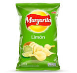

Las papas Margarita son una popular marca de papas fritas en Colombia, estas papas son conocidas por su variedad de sabores, desde el tradicional sabor a limón. Las papas Margarita son apreciadas por su textura crujiente y su sabor consistente.
Precio: $10.000
La gaseosa Colombiana, conocida popularmente como "la Colombiana," es una bebida carbonatada originaria de Colombia. Lanzada en 1904 por la empresa Postobón, es una de las gaseosas más emblemáticas del país. Su sabor es único y difícil de categorizar, a menudo descrito como una mezcla entre crema de soda y chicle, con un color característico rojo o naranja. Es muy popular en todo el país y se considera un símbolo nacional, consumida especialmente en celebraciones y acompañada de platos tradicionales colombianos.
Precio: $20.000
producido por aves como las gallinas, fuente rica en proteínas y nutrientes esenciales. Está compuesto por una cáscara dura que protege el contenido interior, el cual consiste en una clara (albúmina) y una yema. Los huevos se utilizan en una amplia variedad de preparaciones culinarias, desde cocidos o fritos hasta en recetas de repostería y salsas. Además de ser un alimento versátil, los huevos son básicos en muchas dietas alrededor del mundo.
Precio: $30.000